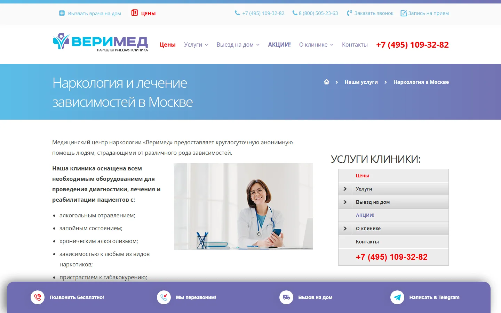
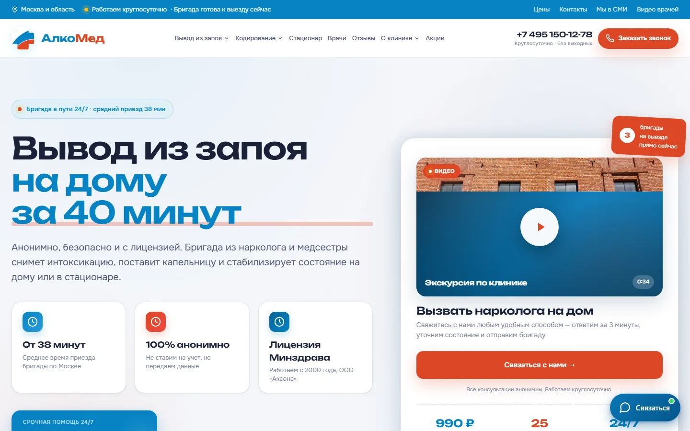
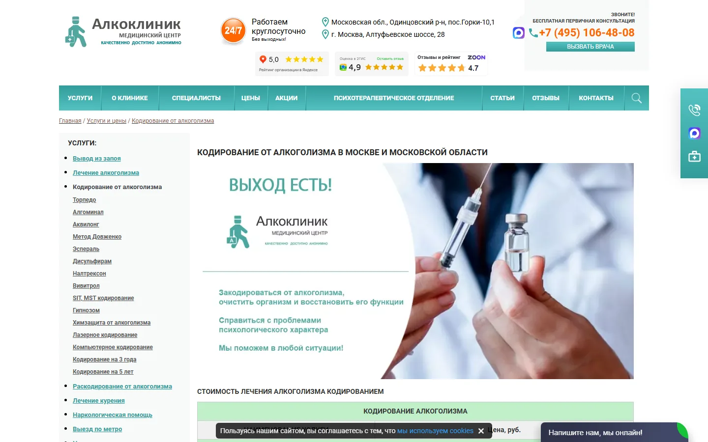
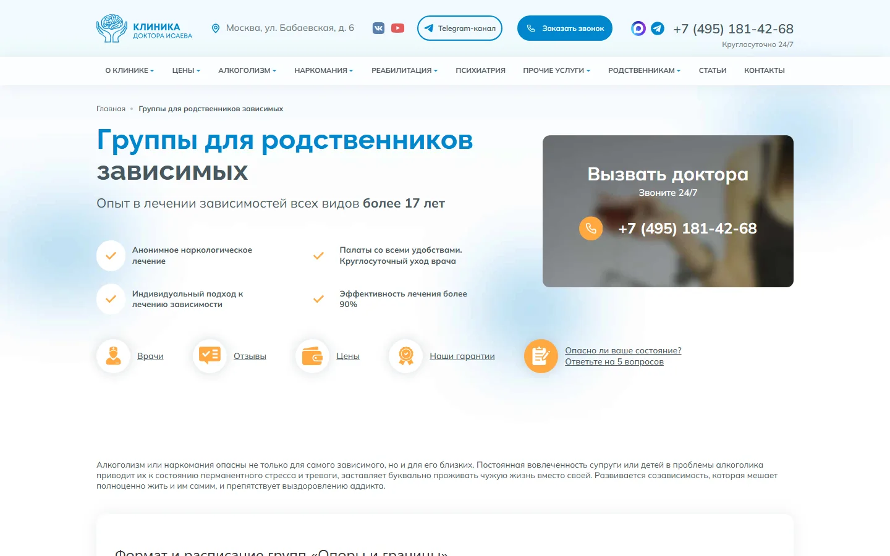
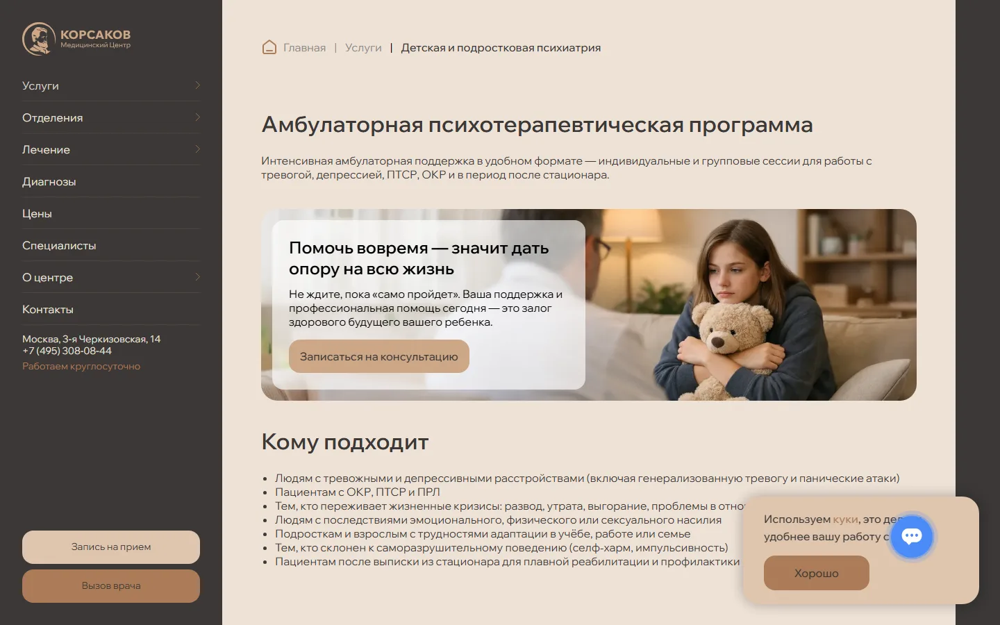
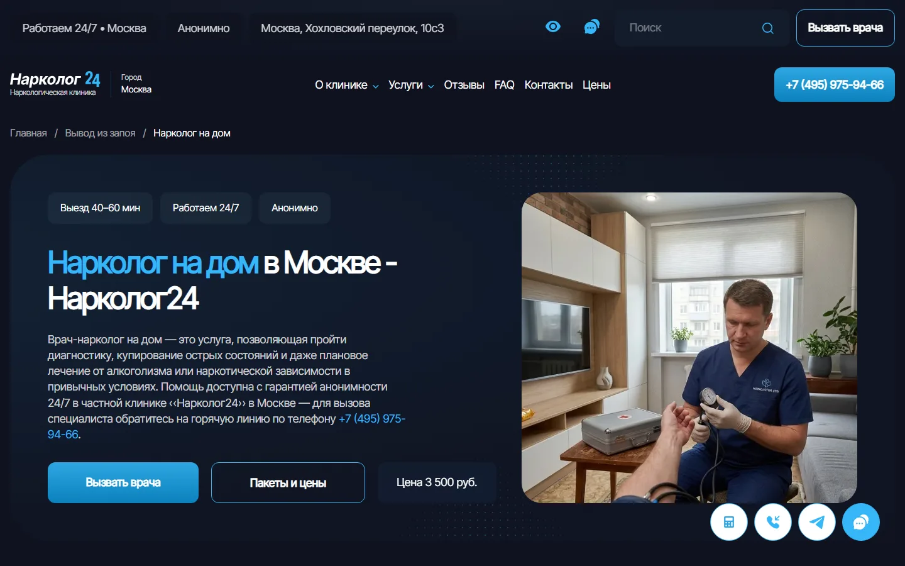

Размер сайта относительно рынка
Объём сайта уже выше рынка; проблема не в недостатке URL.
Аналитический отчёт
profilactica.clinic не нужно становиться ещё одним огромным сайтом с тысячами одинаковых страниц. По объёму проект уже больше медианного конкурента: у сайта 1004 URL против медианы рынка около 280. Проблема не в количестве страниц, а в том, из чего это количество собрано.
Внутри /uslugi/ находится 882 URL. Около 763 из них — ГЕО-страницы, в основном две матрицы: «нарколог на дом × локация» и «вывод из запоя × локация». То есть большая часть коммерческого сайта уже размножена географически, а ассортимент услуг, структура разделов, страницы выбора и доверия развиты слабее.
Финальная стратегия строится на пяти вещах:
/uslugi/.Целевая модель: не самый большой сайт в нише, а самый понятный и проверяемый сайт в момент, когда человек выбирает конкретную помощь.
Объём сайта уже выше рынка; проблема не в недостатке URL.
763 ГЕО URL, 119 прочих URL внутри /uslugi/, 122 остальные страницы сайта.
В выборке 160 конкурентных доменов — около 143 270 URL-строк. Среднее значение сильно раздувают крупные федеральные сетки, поэтому полезнее медиана: около 280 страниц на домен. profilactica.clinic с 1004 страницами уже находится заметно выше среднего рынка по объёму.
Это важно, потому что старая логика «надо просто создать больше посадочных» для проекта уже не работает. Если продолжить размножать две текущие ГЕО-матрицы, сайт станет больше, но его структура останется перекошенной.
Практически у всех сильных игроков есть одни и те же базовые элементы: круглосуточная связь, «анонимность», лицензия, цена «от», специалисты, отзывы, формы вызова, стационар, кодирование, вывод из запоя. Это уже не преимущество.
Выигрывают конкуренты, которые лучше остальных собирают систему:
Количество доменов в выборке, у которых видно ГЕО-покрытие по направлению.
В нише нет одного сайта, который стоит копировать целиком. У разных лидеров сильны разные системы.
Группа A — основные стратегические ориентиры
Verimed — структура услуг

AlcoMed — доверие, цена и реальная клиника

AlcoClinic — коммерческая глубина

Ne-zavisimost / клиника Исаева — длинный путь пациента

Группа B — сильные специализированные ориентиры
Трезвый курс — масштабирование ГЕО
Клиника Корсаков — психиатрия

Narkolog24 — коммерческий шаблон

По умолчанию Verimed, AlcoMed и Ne-zavisimost. Остальные домены можно включить чекбоксами.
Рынок перегрет одинаковыми обещаниями. Самые частые слабости:
Именно здесь у profilactica.clinic есть возможность строить преимущество, которое сложнее скопировать, чем ещё одну статью или ещё один SEO-текст.
Оценки возможностей из конкурентного разбора, без привязки к трафику.
1004 URL — это не маленький сайт. 882 URL находятся в /uslugi/, из них около 763 относятся к ГЕО. Основной объём создан двумя услугами. В итоге поисковая структура сайта выглядит так, будто клиника прежде всего делает две вещи в сотнях локаций, а остальные направления вторичны.
/uslugi/Большинство услуг лежат на одной глубине. Алкоголизм, методы кодирования, вещества, психиатрия и узкие расстройства не образуют понятных тематических веток.
Правильная модель:
/uslugi/lechenie-alkogolizma/
/uslugi/lechenie-alkogolizma/kodirovanie/
/uslugi/lechenie-alkogolizma/kodirovanie/metod-dovzhenko/а не десятки независимых URL непосредственно в /uslugi/.
В выгрузке цена встречается примерно в 79% Title. При этом по сайту одновременно используются разные значения. Это не просто редакционная проблема: противоречия уже попадают в сниппеты и видны поисковикам.
Нужен единый источник цены и явное разделение:
Средняя длина Title у проекта около 90 символов при рыночном среднем около 71. Большая часть текущих ГЕО-Title построена как длинный набор коммерческих модификаторов.
В выгрузке поле H1 пустое у 95% URL. Это может быть либо массовой ошибкой, либо особенностью краулера/рендеринга. Перед переносом нужно проверить выборку напрямую в HTML. Если H1 действительно отсутствует — исправлять шаблонно на всех типах страниц.
Найдены пересечения по лечению алкоголизма, срочному кодированию, капельницам, раскодированию, а также опечатки и неодинаковая транслитерация в URL. При миграции нельзя переносить всё один к одному: сначала выбирается один канонический URL на одну самостоятельную задачу.
препарат кодирования × метро;вещество × метро;психиатрический диагноз × город;Группировка по SILO и родителю. У каждой страницы можно скопировать URL.
/uslugi/
├── narkologicheskaya-pomosh/
│ ├── narkolog-na-dom/
│ ├── konsultaciya-narkologa/
│ ├── psihiatr-narkolog/
│ ├── stacionar/
│ ├── gospitalizaciya/
│ └── chastnyj-vytrezvitel/
│
├── lechenie-alkogolizma/
│ ├── vyvod-iz-zapoya/
│ │ ├── na-domu/
│ │ └── v-stacionare/
│ ├── kapelnicy-i-detoks/
│ │ ├── kapelnica-na-domu/
│ │ ├── kapelnica-ot-zapoya/
│ │ ├── kapelnica-ot-pohmelya/
│ │ └── abstinentnyj-sindrom/
│ ├── kodirovanie/
│ │ ├── na-domu/
│ │ ├── metod-dovzhenko/
│ │ ├── gipnoz/
│ │ ├── ukol/
│ │ ├── vshivanie/
│ │ ├── dvojnoj-blok/
│ │ ├── preparaty/
│ │ └── raskodirovanie/
│ ├── v-stacionare/
│ ├── ambulatorno/
│ ├── zhenskij-alkogolizm/
│ ├── muzhskoj-alkogolizm/
│ ├── pivnoj-alkogolizm/
│ ├── hronicheskij-alkogolizm/
│ ├── u-pozhilyh/
│ └── bez-kodirovaniya/
│
├── lechenie-narkomanii/
│ ├── snyatie-lomki/
│ │ ├── na-domu/
│ │ └── v-stacionare/
│ ├── detoksikaciya/
│ │ └── ubod/
│ ├── v-stacionare/
│ ├── ambulatorno/
│ ├── geroin/
│ ├── metadon/
│ ├── mefedron/
│ ├── kokain/
│ ├── amfetamin/
│ ├── metamfetamin/
│ ├── spajs/
│ ├── gashish/
│ ├── marihuana/
│ ├── soli/
│ ├── alfa-pvp/
│ └── butirat/
│
├── drugie-zavisimosti/
│ ├── igromaniya/
│ ├── stavki/
│ ├── kompyuternaya/
│ ├── internet/
│ ├── nikotinovaya/
│ ├── toksikomaniya/
│ └── lekarstvennaya/
│ ├── pregabalin/
│ ├── benzodiazepiny/
│ ├── fenazepam/
│ ├── tramadol/
│ ├── kodein/
│ └── antidepressanty/
│
├── reabilitaciya/
│ ├── alkogolizm/
│ ├── narkomaniya/
│ ├── igromaniya/
│ ├── mediko-socialnaya/
│ ├── 12-shagov/
│ ├── metod-shichko/
│ └── resocializaciya/
│
├── psihiatriya/
│ ├── konsultaciya/
│ ├── psihiatr-na-dom/
│ ├── stacionar/
│ ├── trevozhnye-i-stressovye-rasstrojstva/
│ ├── rasstrojstva-nastroeniya/
│ ├── psihoticheskie-rasstrojstva/
│ ├── rasstrojstva-lichnosti-i-povedeniya/
│ ├── rasstrojstva-pishchevogo-povedeniya/
│ ├── kognitivnye-i-organicheskie/
│ └── rasstrojstva-sna/
│
├── psihoterapiya-i-psihologiya/
├── pomoshch-rodstvennikam/
├── diagnostika/
└── vosstanovitelnaya-terapiya/У проекта уже есть часть вещества-специфичных страниц, но заметный резерв остаётся в:
Все эти страницы создаются без ГЕО.
Общие методы и препараты остаются самостоятельными страницами Москвы, но не получают собственных ГЕО-матриц. ГЕО создаётся только на уровне общего «кодирование от алкоголизма».
Главный рост идёт не через ГЕО, а через глубину структуры: панические атаки, ОКР, ПТСР, фобии, депрессия, БАР, шизофрения, психоз, расстройства личности, анорексия, булимия, деменция, бессонница.
ГЕО — не отдельный верхний раздел, а дочерний слой конкретной услуги.
/uslugi/narkologicheskaya-pomosh/narkolog-na-dom/metro/belorusskaya/
/uslugi/narkologicheskaya-pomosh/narkolog-na-dom/okrug/cao/
/uslugi/narkologicheskaya-pomosh/narkolog-na-dom/mo/korolev/Каждая из четырёх услуг получает 215 текущих станций/транспортных узлов, 12 административных округов Москвы и 50 основных городов Московской области. То есть 277 ГЕО на одну услугу.
| Услуга | Метро | Округа | МО | Итого |
|---|
Итого основная матрица: 1108 URL. Часть уже существует у нарколога и вывода из запоя и будет не создана заново, а мигрирована в новое SILO.
Общая рабочая ГЕО-матрица: 1260 URL.
Значения считаются из geo-pages.csv: метро / округа / МО.
| Услуга | Тип | Локация | URL |
|---|
Существующие посёлки, малые населённые пункты и другие legacy-страницы не надо автоматически удалять и не надо размножать на новые услуги.
Это место окончательно дочищается после семантического ядра и выгрузки GSC/Вебмастера, но новая архитектура уже сейчас не должна зависеть от этих страниц.
ЦАО, САО, СВАО, ВАО, ЮВАО, ЮАО, ЮЗАО, ЗАО, СЗАО, ЗелАО, НАО, ТАО.
Первые 30 — основная волна для всех городских направлений; ещё 20 — расширение для четырёх acute-услуг и психиатра на дом.
Используется текущий набор сайта; добивать матрицу до каждого нового объекта метро автоматически не нужно. Новая станция добавляется, если семантика и выдача подтверждают самостоятельный спрос.
Название локации само по себе не является уникализацией. На странице должны меняться данные, которые реально зависят от места:
Если для страницы нечего менять кроме слова «Королёв» или «Белорусская», её нельзя считать готовой к индексации.
Перелинковка задаётся не текстовым ТЗ на каждую страницу, а системой правил. У каждой индексируемой страницы есть один основной родитель. Хлебные крошки, URL, меню раздела и XML-карта должны показывать один и тот же путь.
Каждая коммерческая страница получает 5 типов ссылок: вверх на родителя; на 3–6 соседних страниц того же SILO; на следующий логичный этап помощи; на профильного специалиста; на цену/документы. Ссылки должны быть обычными HTML <a href>.
ГЕО-страницы четырёх основных услуг внутри одной территории связываются между собой. Пример для Белорусской: нарколог на дом ↔ вывод из запоя ↔ капельница на дому ↔ кодирование. Страница «кодирование Эспераль» не должна иметь 215 ссылок или 215 копий под станции.
/uslugi/ → все основные SILO. Каждый SILO-хаб → дочерние услуги первого уровня + 1–3 страницы выбора + цены + специалисты + лицензия. Дочерняя услуга → родительский хаб + 3–6 смысловых соседей. Не делать глобальный блок на 50 ссылок.
Нарколог на дом ссылается на родитель «Наркологическая помощь», вывод из запоя на дому, капельницу, кодирование, стационар, «кто приезжает», цены и профили выездной службы. Вывод из запоя → дом/стационар, капельницы, лечение алкоголизма, кодирование, реабилитация, «что делать после», выбор формата и цены.
Базовая страница услуги + округ/МО-хаб + 4–6 ближайших локаций того же типа + те же три acute-услуги в этой же локации. Rehab ГЕО — без метро. Психиатр на дом — округа и города, метро на первом этапе не создавать.
Хаб → форматы, методы, препараты, раскодирование. Метод/препарат → хаб + 3–5 альтернатив + лечение алкоголизма + реабилитация + срыв после кодирования + цены + врач. Методные страницы не получают ГЕО-сетку. ГЕО кодирования не ссылается на десятки препаратов.
Вещество → лечение наркомании + снятие ломки + детоксикация + стационар + реабилитация наркозависимых + врач + цены + 2–4 соседних вещества, но не полный каталог. Без вещество × город.
Хаб → алкоголизм, наркомания, игромания, программы, ресоциализация. Каждая страница → соответствующее лечение + помощь родственникам + созависимость + специалисты + условия центра/трансфера + цены. ГЕО rehab → хаб + трансфер + 4–6 соседних городов.
Психиатрия → консультация, психиатр на дом, стационар и хабы расстройств. Диагноз → родительский хаб + 2–4 близких состояния + профильный психиатр + формат лечения. Диагнозы не размножаются по ГЕО.
Хаб → мотивация, созависимость, консультация без пациента, группа. Эти страницы должны получать ссылки с вывода из запоя, лечения алкоголизма и наркомании, реабилитации, повторного запоя и срыва после кодирования.
Каждая P0 money-page → цены, лицензия и документы, релевантный специалист, «как проверить клинику». Профиль специалиста → только услуги, которые он реально оказывает. Психолог не должен автоматически выводиться как специалист для медицинского выезда.
Основной анкор — естественное название целевой страницы. Не делать сквозные exact-match анкоры по 20 раз на странице. Для ГЕО допустимы «нарколог у метро Белорусская», «вывод из запоя в Королёве», «помощь в ЦАО».
Не делать: вещество × метро; препарат кодирования × метро; диагноз психиатрии × город; улицы; перекрёстные блоки на сотни ссылок; фильтры, создающие индексируемые комбинации; второй URL того же интента в другом SILO.
Сильная коммерческая страница должна отвечать на вопрос пользователя до того, как он позвонит. Рекомендуемый порядок:
До массовой генерации страниц должен существовать единый набор подтверждённых данных:
Главная проблема текущего сайта — не отсутствие значков доверия, а возможность встретить разные факты на разных страницах.
Не количество URL. Новая архитектура считается нормальной, если: